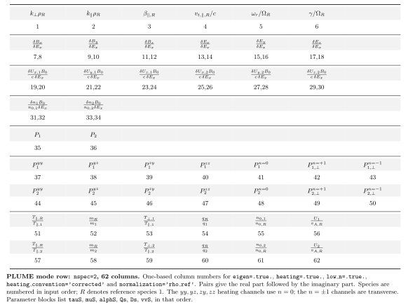
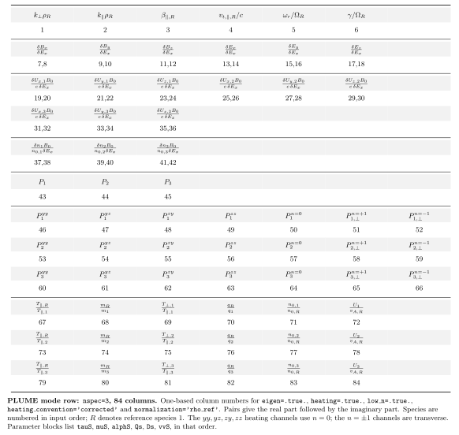
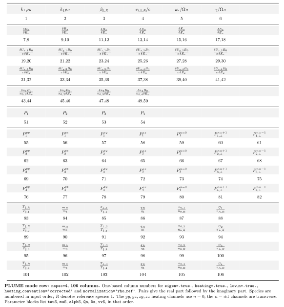

Manual home · Modes · Normalization
Let D=dataName, O=outputName, S=nspec, and N the branch slot (one-based).
All paths below are relative to the execution directory. No single reader
handles every family merely because a filename contains .mode or .eigen.
| Producer | Filename pattern | Contents / primary reader |
|---|---|---|
| Direct option=-1 | stdout | Labeled determinant/fields/moments/diagnostics; not a rectangular mode table |
| Frequency map | data/D/dispersion_O.map |
Five-column determinant grid; NumPy loadtxt |
| Map candidates | data/D/dispersion_O.roots |
Coordinates/root plus species parameters; NumPy loadtxt |
| Repeated map | dispersion_O_<scan-tag>.map/.roots |
Same schemas at each scanned state |
| Serial scan | data/D/O_<parameter>_<range>.modeN |
Mode columns selected by flags; explicit sweep/contour reader |
| 2D scan | data/D/O_<parameter1>_<parameter2>.modeN |
Same mode schema, blank-separated outer blocks |
| Scan tensors | O_tensor_<parameter>_<range>.modeN or 2D counterpart |
Six independent complex chi components per species |
| Corrected energy/heating | data/D/O.energy |
Versioned named-column companion, load_plume_energy |
| d_ref metadata | data/D/normalization_O.txt |
Native units/composition/auxiliary and moment notes |
| Bessel metadata | data/D/O.bessel |
Harmonic policy/cache/convergence metadata |
| FPC options 6/7 | O.<quantity>.specieSS.modeMM |
Thermal/grid headers and velocity blocks, specialized readers |
| FPC debug | O.eigen.modeMM, O.mom.modeMM |
Historical debug layouts; not scan mode schemas |
| Radial option=5 | data/D/O.modeN and associated historical outputs |
Radius-last experimental layouts; explicit custom parser |
The integer scan tags scale/truncate coordinate values; they are not units and
can collide for nearby endpoints. Treat numeric coordinate columns and matching
input as authoritative. Use unique O/run directories and completed-file checks
to avoid stale branches. writeOut=.false. does not prevent files or metadata.
Supplied-root option=1/nscan=0 prints solutions but does not write a standalone
.roots file. Map files do not gain eigen/heating/tensor blocks when flags request
them; ignored map diagnostics now warn, and corrected map heating is rejected.
Warnings are written to data/D/O.warn, including equilibrium, scan,
field/moment, heating/energy, Bessel and FPC warnings. The file is replaced after
reading ¶ms on each run and is empty if no warnings occur. Records are
flushed as they are written, including before an abnormal termination.
Set warnings_to_stdout=.true. in ¶ms to also print warnings to stdout.
The default is .false., independently of writeOut. The Python wrapper accepts
warnings_to_stdout=True in set_params and preserves the namelist control on
read/write roundtrips. Fatal errors and ordinary
progress and result output retain their existing destinations. Warning conditions,
status codes and numerical results are unchanged.
The output directory must already exist. If the warning log cannot be opened or written, an I/O warning is reported once on stderr and subsequent warnings are sent there. Warnings emitted before log initialization also use stderr.
No header. Each real-frequency block has ni+1 rows, followed by a blank line; there are nr+1 blocks. Exactly five columns:
| One-based column | Meaning |
|---|---|
| 1 | omega_r/Omega_R |
| 2 | gamma/Omega_R |
| 3 | log10(abs(det Lambda)) |
| 4 | Re det Lambda |
| 5 | Im det Lambda |
Lambda is the ordinary electromagnetic wave matrix, not chi or a frequency-scaled tensor. Invalid guarded map samples are NaN and not legitimate minima. An exactly zero finite determinant has logarithmic magnitude -infinity; distinguish it from a NaN failed evaluation. Real/imaginary map coordinate precision is es14.6 and determinant components es14.4. The log-grid inconsistency means logarithmic bounds are not physical endpoints; linear grids are recommended.
No header; width 6+6S, typically es14.4. The first six columns are kperp, kpar, betap, vtp, Re w, Im w. Then each population contributes (tauS, muS, alphS, Qs, Ds, vvS) in original order. k/beta/vtp/tau use the selected native input convention; w always uses Omega_R.
These are refined/deduplicated map candidates before later selection filters, not a promise of the first nroot_max least-damped modes. Later filtering and scan continuation do not rewrite .roots into an accepted-branch table. Failed refinements may be omitted. Compare with root-search semantics.
The serial/2D .modeN writer has no header and uses es15.6e3 numeric formatting.
Let Eflag be eigen, Pflag be heating, Lflag be low_n. The first six columns always
contain native kperp, kpar, betap, vtp, Re w, Im w. Each complex quantity is
represented by real then imaginary parts. Species are always in input order.
For unambiguous indexing below use zero-based population s=0..S-1 and component j=0,1,2 (x,y,z). Offsets below are zero-based Python indices, not printed column numbers.
| Block | Start | Length / ordering |
|---|---|---|
| Coordinate/root prefix | 0 | 6 |
| B, if Eflag | 6 | Bx_re,Bx_im,By_re,By_im,Bz_re,Bz_im |
| E, if Eflag | 12 | Ex_re,Ex_im,Ey_re,Ey_im,Ez_re,Ez_im |
| Species velocity, if Eflag | 18 | 6S: all xyz real/imag pairs for species 1, then 2, etc. |
| Species density, if Eflag | 18+6S | 2S: density real/imag pair per species |
| Species heating totals, if Pflag | F | S: Ps_1..Ps_S |
| Selected channels, if Pflag and Lflag | F+S | 7S: seven channels for species 1, then 2, etc. |
| Species input parameters | F+K | 6S: tau,mu,alpha,Q,D,drift per species |
| Historical Ew slot | F+K+6S | One slot only if Eflag and Pflag and not Lflag |
Here F=18+8S when Eflag, otherwise 6. K=8S when Pflag and Lflag, S when Pflag and not Lflag, and zero when not Pflag. Velocity component real/imag indices are 18+6s+2j and the next index; density indices are 18+6S+2s and next. All field/moment units are defined in Eigenfunctions.
| Flags | Rectangular column count |
|---|---|
| No diagnostics | 6+6S |
| Eigen only | 18+14S |
| Heating only, low_n=true | 6+14S |
| Eigen + heating, low_n=true | 18+22S |
| Heating only, low_n=false (corrected) | 6+7S |
| Eigen + heating, low_n=false | 19+15S |
When low_n=true, total Ps_s is at F+s and channel c=0..6 at F+S+7s+c. The channels are n0 yy, n0 yz, n0 zy, n0 zz, full n0, transverse +1, transverse -1. The physical definitions are on Heating. The parameter suffix always follows the full selected heating block, including heating-only files. It must not be mistaken for extra heating columns.
Historical Ew was not assigned by calc_eigen and is not wave energy.
Corrected eigen+heating/low_n=false explicitly writes NaN in that old slot.
Legacy heating-only/low_n=false can emit an extra orphan unassigned Ew record,
making the file ragged. No generic rectangular parser should silently treat
that as a new root. Do not use it as corrected H; read .energy.
Two-dimensional output has blank outer-block separators. np.loadtxt and the
ordinary sweep reader flatten these into rows, so retain coordinates for grid
reconstruction rather than assuming missing/failed points can be removed.
2D eigen/heating switches come from scan_input_2; tensor output requires both
tensor switches. Serial files use the corresponding scan's flags.
Failed written roots have NaN frequency and diagnostic slots with input parameters retained. Cold kinetic-heating slots are also NaN, but for a different reason. A field failure can coexist with a valid root; a species moment failure does not overwrite valid fields or other species. Use companion statuses and warnings, not a blanket replacement of missing values with zero.
The diagrams below map quantities to one-based column numbers within a
single output row for two, three and four species, with eigen=.true.,
heating=.true. and low_n=.true.. Each complex quantity occupies a real/imaginary
pair. Species are numbered in input order; denotes reference species 1.
Velocity components are ordered for every species.
The coordinate and species-parameter labels use rho_ref; d_ref retains the
column ordering with the native units defined in Normalization.
Field and moment normalizations are defined in
Eigenfunctions.
The heating labels follow heating_convention='corrected', with separate
transverse and channels; see Heating.
Legacy heating retains the column ordering but uses its historical definitions.
The corrected .energy companion has its own schema below.
Two species: 62 columns. Open full-size diagram.

Three species: 84 columns. Open full-size diagram.

Four species: 106 columns. Open full-size diagram.

LaTeX sources: two species,
three species, and
four species.
With LaTeX (including standalone) and pdf2svg installed, run from the repository
root to regenerate all three SVGs; intermediate files remain in a temporary directory:
table_build=$(mktemp -d)
for suffix in '' '-2' '-3'; do
pdflatex -interaction=nonstopmode -halt-on-error \
-output-directory="$table_build" "docs/assets/PLUME-Table${suffix}.tex" || break
pdf2svg "$table_build/PLUME-Table${suffix}.pdf" \
"docs/assets/PLUME-Output-Table${suffix}.svg" || break
done
The tensor writer produces 4+18S columns, no frequency columns and no header:
For component c=0..5 and species s=0..S-1, its real/imag pair starts at 4+2(cS+s). Parameter suffix begins at 4+12S. The other elements satisfy chi_yx=-chi_xy, chi_zx=chi_xz, chi_zy=-chi_yz, with ordinary transpose/sign, not complex conjugation. These are dimensionless species chi contributions without a vacuum identity. To reconstruct epsilon and Lambda, add each once and use the frequency in the matching mode row. A tensor file alone does not supply that mode frequency. Failed guarded evaluations yield NaNs, not a cached tensor from a prior successful point. Repeated maps do not emit these files.
Corrected direct option=-1 and serial/2D scans requesting heating write
data/D/O.energy. The file has a # schema=plume-energy-v1 header, numerical
settings/species model notes, and a # columns: line. It is a whitespace table
with 27+15S numeric fields and one final quoted string. Do not split the
final filename on spaces without respecting quoting.
Exact header order:
record workflow scan outer point mode root_valid field_status
energy_status applicability response_code
kperp kpar omega_r gamma H_total H_E H_B H_species_total
f_E f_B f_species f_E_abs uncertainty gamma_ratio gamma_est total_Ps
For each species N=1..S the next 15 fields are:
H_sN f_sN Q_sN Ps_sN status_sN dmatrix_sN dproject_sN dstep_sN
C1_sN C2_sN C3_sN C4_sN C5_sN C6_sN C7_sN
The final field is source_file. The N above is a species number, e.g. H_s1,
not the literal character N in a header. Eleven leading fields are integers;
species status is written numerically among the real-valued species block but
is a categorical code. Use the actual # columns header for reading.
| Field(s) | Meaning |
|---|---|
| record | Monotone record counter within this companion |
| workflow | -1 direct, 1 serial, 2 grid |
| scan, outer, point, mode | Original scan/outer/internal integration/branch indices; zero when not used |
| root_valid | Caller validity indicator; in direct -1, field acceptance at supplied frequency is used, not an independent root proof |
| field_status | Ex=1 field diagnostic status |
| energy_status | Numerical resolution of energy, table below |
| applicability | Bit mask for weak-mode interpretation |
| response_code | Underlying response/pole/numerical status when relevant |
| kperp,kpar,omega_r,gamma | Native k and Omega_R-normalized frequency |
| H_total,H_E,H_B,H_species_total,H_sN | Dimensionless complete formal energy and contributions |
| f_E,f_B,f_species,f_sN | Signed formal fractions, not clamped |
| f_E_abs | Noncancelling electric contribution measure, not a physical fraction |
| uncertainty | Empirical numerical H resolution estimate, not a rigorous bound |
| gamma_ratio | abs(gamma/omega_r) |
| gamma_est | Independent weak-mode estimate -omega_r sum(Q_warm)/H |
| total_Ps | Sum of available warm normalized Ps; fully cold/inapplicable unavailable, not fabricated zero |
| Q_sN,Ps_sN,C1_sN..C7_sN | Raw absorption numerator, normalized full and seven selected species channels |
| status_sN | Kinetic/cold/absent/numerical/applicability availability category |
| dmatrix_sN,dproject_sN,dstep_sN | Derivative window error indicators and chosen relative step; cold analytic derivatives use zero |
| source_file | Quoted associated mode filename, or stdout for direct evaluation |
H terms are in units 16 pi W/abs(deltaEx)^2; definitions and weak-mode limitations are on Heating. Cold H_s may be valid while its Q/Ps/channels are unavailable. Central snapshots use real frequency; accepted-mode fields/moments remain complex-frequency diagnostics. The companion does not redefine Ew.
| energy_status | Meaning |
|---|---|
| 0 | Numerically resolved formal energy |
| 1 | Invalid input |
| 2 | Unavailable/invalid Ex=1 field |
| 3 | Zero real frequency |
| 4 | Response failure or real pole |
| 5 | Unresolved derivative |
| 6 | Unresolved/vanishing H |
| 7 | Unsupported collision configuration |
| 8 | Failed root |
| 9 | Nonfinite arithmetic |
Applicability bits: 1 means abs(gamma/omega_r)>.05; 2 means weak-balance or near-reactive warning. Both may be set. Formal H can be resolved while normalized Ps/channels are unavailable. Negative H alone is not failure. Species statuses: 0 valid kinetic, 1 cold kinetic heating unavailable, 2 absent, 3 input/response failure, 4 derivative, 5 unavailable energy normalizer, 6 applicability.
For corrected rho_ref parameter scans, comment records preserve the changing
plasma without changing plume-energy-v1 numeric columns:
# scan_axis records the scan index, style/type, bounds, counts and spacing at
the start of a workflow or serial segment.# point_state record=N betap=... vtp=... gives the native beta and velocity
control for energy record N.# species_state record=N species=S tauS=... muS=... alphS=... Qs=... Ds=... vvS=...
gives all six native inputs for species S at that record.Values use the companion's full numeric precision. Wavevector and frequency are
already in the associated energy row. These comments are written for failed
points as well as successful ones; existing readers continue to ignore them.
The .modeN parameter suffix retains its established ordering and precision.
point is an internal integration index, not the output row number when
nres>1. Use source_file, mode, scan/outer/point and numeric coordinates to join.
Completed scans write companion entries for failed written roots (status 8),
so failures do not shift subsequent associations. Hidden failed substeps warn
but have no written record. Interrupted processes can flush a companion before
a buffered mode file, so verify completion and row counts before joining.
Companions are reset for direct/serial/grid starts to avoid stale records;
legacy runs do not write a replacement corrected companion. Never merge old
branches by an unrestricted folder glob and presume they belong to this run.
Written for d_ref as data/D/normalization_O.txt. It identifies native units,
reference/composition, species moment conventions, availability and, for a cold
reference with warm populations, the internal first-warm auxiliary scale.
Reusing an output name with rho_ref removes stale d_ref metadata. Absence alone
is not proof that arbitrary old/external data are rho_ref; keep the original input.
Some historical prose in metadata is broader than the current supported paths;
use this manual and explicit flags for diagnostic availability.
Normally written at executable completion. Key/value lines identify harmonic mode, tolerance, adaptive maximum/fixed count and unresolved convergence. With bessel_diagnostics=true or any unresolved adaptive request, cached-species rows are
species lambda N capacity converged E0_bound E2_bound hits misses array_evaluations
Optional unresolved history has species, maximum, lambda, tolerance, E0_bound, E2_bound. Active N and allocation capacity differ. Counters count an array evaluation, not each coefficient, and a cache miss can require selection without new arrays. Cold/cache-unused slots may be absent. The historical fixed128 path explicitly does not pretend to have measured modern cache counters. Z backend is printed with writeOut and recorded in corrected energy metadata; keep the input for complete provenance of runs without energy output.
Gyro suffixes: .cpar, .cperp, .df1gyro.real, .df1gyro.imag, followed by
.specieSS.modeMM. Headers contain eight labels/values (tau, bi, kpar, kperp,
vti, mu, omega.r, omega.i), five grid labels/values and a separator. The velocity
matrix has vperp rows and vpar columns. Bounds are inclusive according to the
writer's integer-grid construction. Header wave quantities use the derived
thermal solver convention, even from d_ref input. The omega fields literally
store w sqrt(beta_R)/Kpar rather than a dimensionless frequency alone; this is
not the physical phase speed in v_A units when alpha_R differs from one.
Cartesian suffixes include .cparcart, .cperp1, .cperp2, .dfs.real,
.dfs.imag, .dfs3D.real, .dfs3D.imag, with analogous indexed suffixes.
The projection reader handles three matrices (vx,vy), (vx,vz), (vy,vz), with
seven grid bounds/spacing values. Three-dimensional blocks have their own
storage order (z,y,x), one writer line per (x,y) containing z samples. They are
not interchangeable with projected files. Consult the
FPC appendix for the existing correlation/distribution units
and orientation details; do not infer them from a generic scan reader.
Current gyro/Cartesian readers preserve NaNs, infinities, finite signed values,
physical zeros and original shapes. They offer the explicitly optional
visualization_nan_to_zero=True for plots only. It replaces only NaNs;
the 3D default also preserves representable tails rather than clipping them.
Historical species-label/header-offset heuristics remain. These functions do
not add mixed FPC or validate all FPC moment/energy closure questions.
Debug .eigen.modeMM has 18+16S values: six root/plasma entries, 12 fields,
6S velocities, 2S densities, S old Ps and 7S selected channels, without species
parameter suffix. Debug .mom.modeMM has 11S values: density complex for all,
velocities complex for all, then S values each of jxEx,jyEy,jzEz in the historical
debug definition. loadeigen/loadmoms have hard-coded/debug assumptions,
including fabricated electron-P behavior in loadeigen. Do not recommend them
for general species interpretation or energy closure.
Option=5 writes a distinct radius-last format, not the ordinary scan schema. After the native six coordinate/root entries, it may write fields/moments and species-total-only legacy heat, then 6S parameters, old unassigned Ew if heating, and finally radius in solar radii. Root-only width is 7+6S; eigen-only 19+14S; heating-only 8+7S; eigen+heating 20+15S. Do not silently discard the last radius or assume seven channels are present. These experimental layouts need a custom parser; there is no validated primary standalone radial example.
Run Python from the repository root or add that root to the import path. The wrapper remains optional. Use explicit schema settings rather than counting surplus columns as diagnostics.
from linfpclib.linfpc import load_plume_sweep, load_plume_energy
# The Quick Start eigen-only file: species parameters are NOT heating.
d = load_plume_sweep(
'data/example/mixed_fields_warm_reference_kpar_60_90.mode1',
nspec=2, eigen=True, heating=False)
w = d['w'] + 1j*d['g']
# For a corrected heating run use heating=True and its matching eigen flag.
r = load_plume_energy('data/example/heating_corrected_warm_reference.energy')
print(r['energy_status'], r['H_total'], r['f_E'])
The generic current sweep reader correctly uses seven-channel stride and
heating-only offsets for low_n=true. It is not a general low_n=false, radial,
map or FPC-debug reader. load_plume_energy uses the versioned header, preserves
failed rows/NaNs and quoted source paths, and returns named NumPy columns plus
metadata. Cold kinetic-heating NaN is preserved by both appropriate readers.
The contour/resonance reader offers stricter explicit schemas:
from pathlib import Path
from contours.plot_plume_resonances import read_plume_input, read_dispersion_output
meta = read_plume_input(Path('inputs/example/mixed_fields_warm_reference.in'))
disp = read_dispersion_output(
Path('data/example/mixed_fields_warm_reference_kpar_60_90.mode1'), meta, 1)
assert not disp.heating_available
For serial inputs with unequal scan diagnostic flags, pass one-based
scan_index=N to that API. The plotter CLI does not yet expose the selector;
ambiguous layouts are rejected. 2D uses the second scan flags. Wrong widths,
wrong file families and ragged legacy orphan records raise useful errors.
All seven heating channels and original species order are retained when the
explicit input requests them. Rectangle low_n=false files are interpreted with
the matching flags; no heat is inferred just because more columns remain.
FPC reading uses the specialized family, for example:
from linfpclib.linfpc import loadlinfpccepar, loadlinfpccart
# Use actual option6/7 files, not .modeN scan files:
# gyro = loadlinfpccepar('data/example/<actual>.cpar.specie01.mode01')
# cart = loadlinfpccart('data/example/<actual>.cparcart.specie01.mode01')
# visualization_nan_to_zero=True is an explicit plotting-only opt-in.
The filenames are placeholders here because this manual does not create a new public FPC example. The existing notebook and appendix provide the historical workflow; FPC is not enabled for a warm member of a mixed plasma.
For scalar input roundtrips:
from linfpclib.linfpc import plume_input
obj = plume_input('constructor_fallback')
obj.load_from_file('inputs/example/mixed_fields_warm_reference.in')
obj.dataname = 'example' # explicit post-load redirection; loaded dataName is preserved
obj.write_input('/tmp/my_plume_case', 'my_plume_case') # creates /tmp/my_plume_case.in
The scalar supported groups include low_n, loggridg, nr/ni, tensor and Cartesian bounds. Unknown controls, radial/k_range groups and array/expression syntax are rejected instead of silently lost. Repeated load replaces prior species/scans. writeOut and use_map remain independent verbosity/initialization settings; they are not a combined “write files” flag. See Input for accepted scalar syntax and setter options.
Historical plotters in plotter/, SWIFT and debug helpers can assume fixed
species counts, rho labels or old column contracts. Inspect those assumptions
before using them on new compositions. A plausible plot is not schema validation.